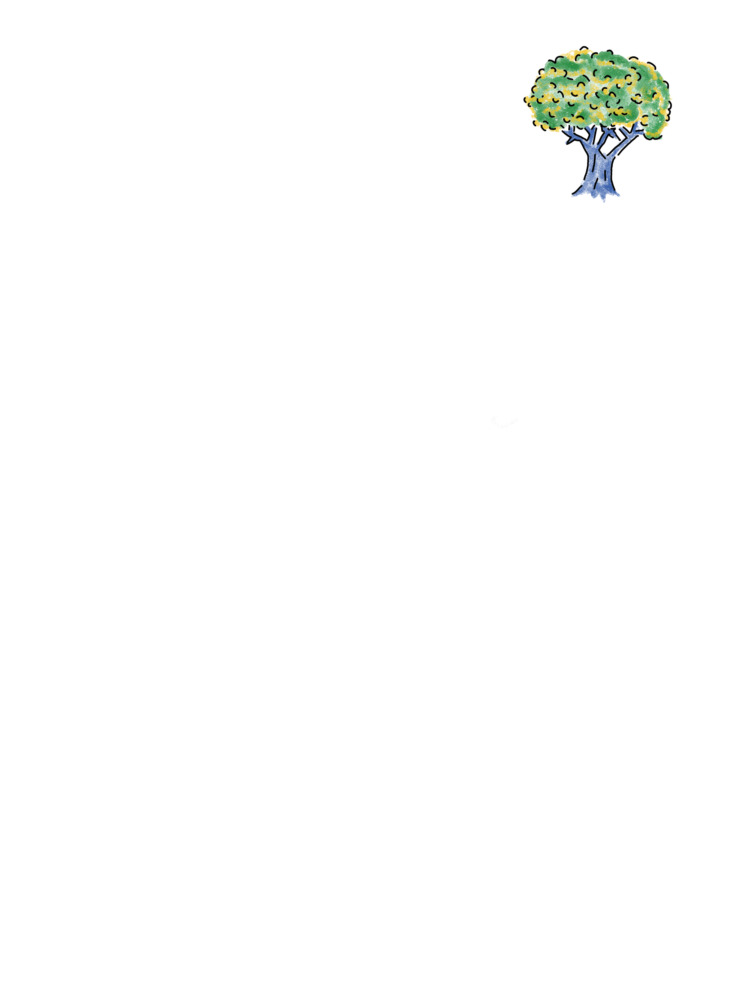

Livro: Povos Originários do Brasil
As part of my coursework at Labjor, I collaborated with two classmates on a book chapter (p. 161) examining the absence of Indigenous peoples within the Sustainable Development Goals and the 2030 Agenda in the Brazilian context. My contribution focused on bridging the human rights perspective with the country's contextual realities, developing two sections: "A Agenda 2030 e a causa indígena" and "Paradigma dos direitos humanos."
In the first section we mapped UN activities in Brazil across the Legal Amazon, uncovering how Indigenous groups are largely excluded from core SDG targets.
(I also wrote about this analysis and thoughts on my Substack newsletter.)
The second section applies a human rights framework to Indigenous self-determination, critiquing societal tendencies to view native communities through static traditionalism, forced economic integration, or outright policy omission.
